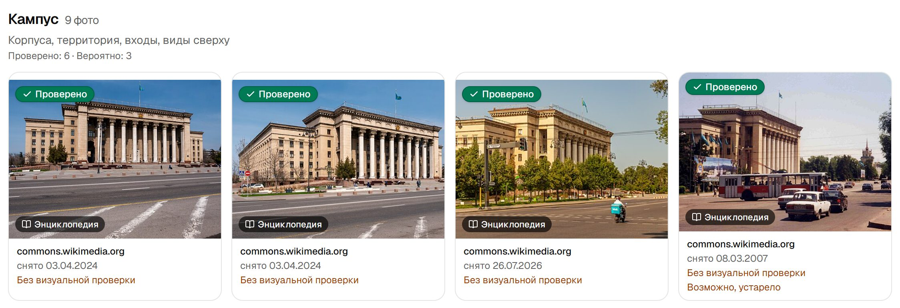
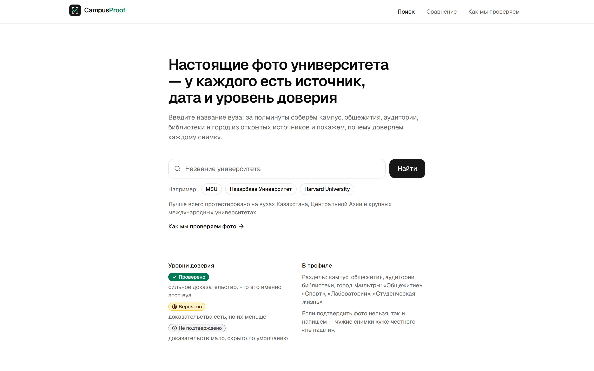
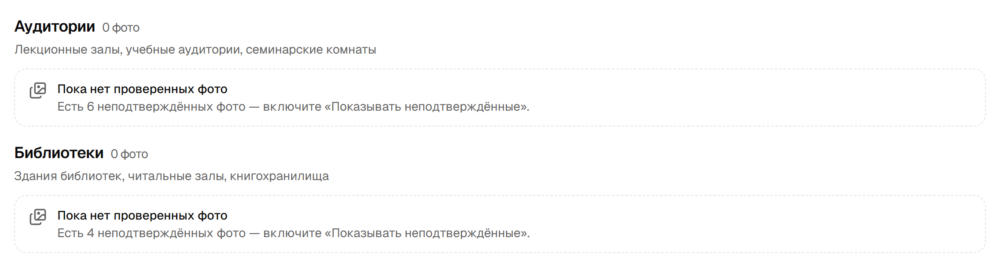
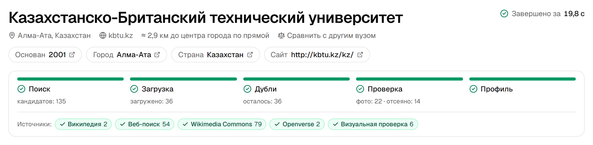
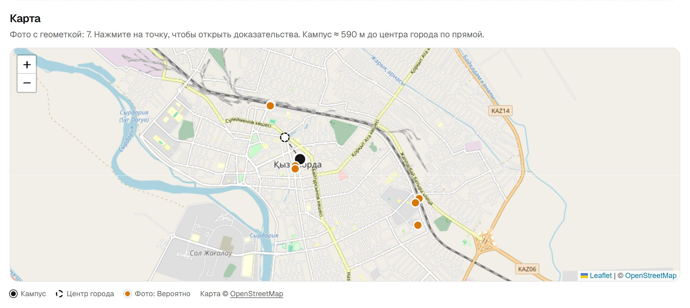
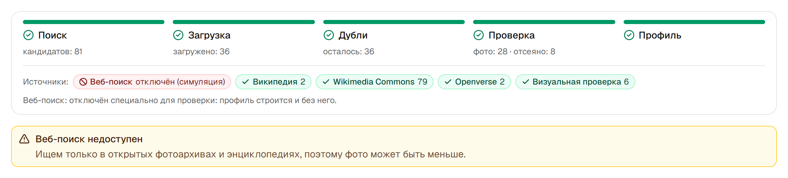

Проблема
CampusProof отвечает на все три — для каждого снимка
Решение

КБТУ на проде, 18.09: уровень, источник и дата у каждого фото
Экраны продукта

Одно поле поиска

Честный пустой раздел

Живой таймер, этапы и источники

Кампус и геометки фото на карте
Как работает проверка
Сразу отклоняем: дубликаты, фотобанки, геометку дальше 50 км, портреты, другой вуз на снимке
Технологии и архитектура

?simulate=web_search_down
Результаты
Уровни фото в 18 профилях, 534 фото:
Smoke-тест прода: 27 запросов, 18.09.2026, 23:18 по Астане, без визуальной проверки. Точность «Проверено» на размеченной выборке не измерена.
Команда
Контракты типов, «ходячий скелет», маленькие PR с автопроверками
План развития
Цель — чтобы любое фото вуза в интернете можно было проверить за 30 секунд